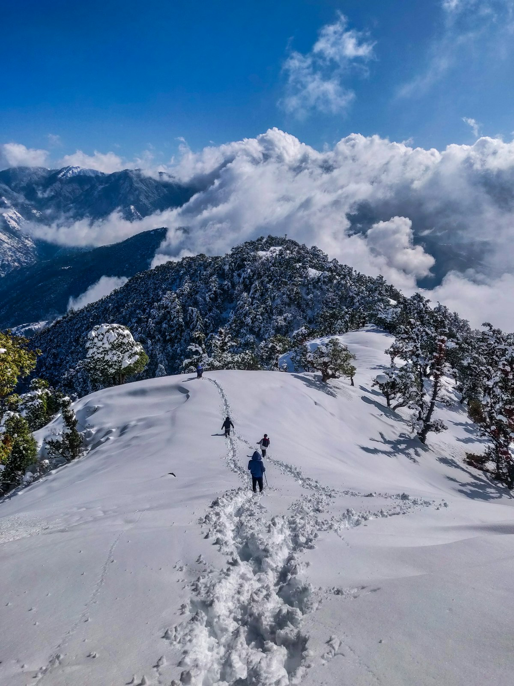
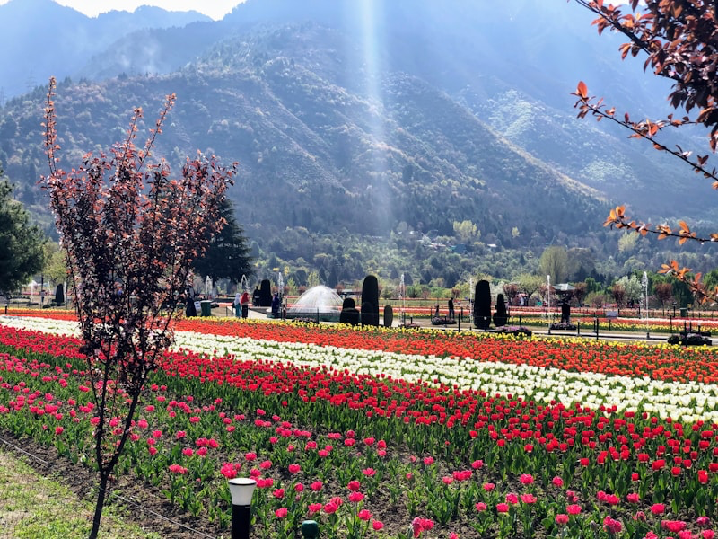
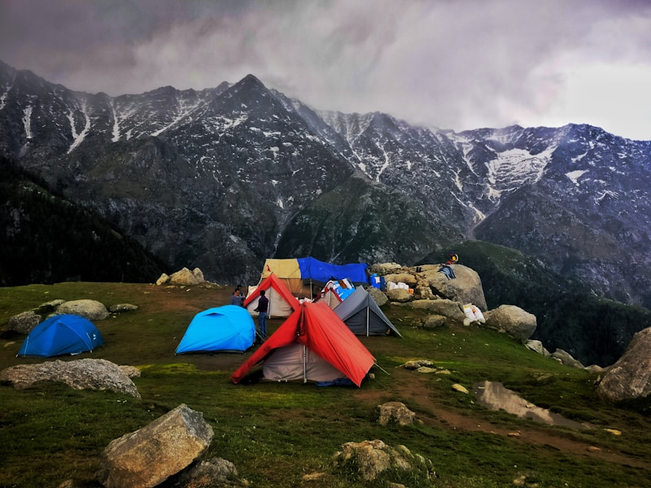

Table of Contents
Kashmir transforms completely once winter arrives. Dal Lake's edges begin to freeze, deodar forests turn white overnight, and Gulmarg's meadows disappear under metres of snow. If you've only seen Kashmir in postcards from spring, winter is an entirely different — and arguably more magical — season to experience it.
This guide covers everything our travellers ask us before booking a winter Kashmir trip: when to go, what a realistic itinerary looks like, where to stay, how much to budget, and what to pack. If you'd rather have us handle the planning, our Kashmir tour packages are built specifically around these winter months.
Why Visit Kashmir in Winter
Most first-time visitors go to Kashmir between March and June, but winter has its own strong case. Gulmarg becomes one of India's few proper ski destinations, Dal Lake's houseboats feel cosier lit up against the snow, and — because footfall is lower than peak season — many houseboats and hotels offer better rates for the same experience.
Winter is also the best season for photography in Kashmir — bare chinar trees against snow, and near-empty Mughal gardens, make for far more dramatic frames than the crowded spring season.
Best Time to Visit Kashmir in Winter
"Winter" in Kashmir spans roughly December to February, but each month has a different character.
December: Early Snow & New Year Crowds
Snowfall usually begins in Gulmarg in late December, and Srinagar sees its first frost. This is peak booking season for New Year, so houseboats and Gulmarg hotels should be reserved at least a month ahead.
January: Peak Snow & Chillai Kalan
January falls within Kashmir's traditional 40-day harshest cold spell, locally called Chillai Kalan. This is the most reliable month for heavy snowfall in both Srinagar and Gulmarg, and the best month for skiing.
February: Milder Cold, Still Snowy
By February, daytime temperatures climb slightly while Gulmarg still holds a thick snow base. It's a good compromise for travellers who want snow scenery without January's most extreme cold.

Top Things to Do in Srinagar in Winter
Srinagar remains fully functional through winter and is a comfortable base for day trips to Gulmarg and Pahalgam.
- Shikara ride on Dal Lake — shorter and colder than in summer, but far more atmospheric with mist rising off the water.
- Houseboat stay — a Kashmir houseboat night is arguably more special in winter, wrapped in blankets beside a bukhari (wood stove).
- Mughal Gardens — Shalimar Bagh and Nishat Bagh are far quieter, and the bare tree structures against snow are a photographer's favourite.
- Old Srinagar & Jama Masjid — a walk through the old city's wooden architecture and spice markets.
Gulmarg in Winter: Snow, Skiing & Gondola Rides
Gulmarg is the single biggest reason travellers choose a winter Kashmir trip. It is home to the Gulmarg Gondola, one of the highest cable cars in the world, taking visitors up to Kongdoori and, snow permitting, onward to Apharwat Peak.
Phase 2 of the Gulmarg Gondola (to Apharwat Peak) frequently closes due to high winds or heavy snowfall, sometimes with no notice. Always keep a backup plan for your Gulmarg day, and book gondola tickets only through authorised counters.
Beyond the gondola, Gulmarg offers skiing and snowboarding lessons for beginners, sledging on the slopes near the market, and snowmobile rides. Ski equipment and instructors are available for hire directly in Gulmarg, so there's no need to bring your own gear.
Where to Stay: Houseboats vs Hotels
This is one of the most common questions we get from travellers planning a Kashmir tour package.
Houseboats on Dal or Nigeen Lake
Best for a one or two-night novelty stay. Most good houseboats now have heating (bukhari or electric) and attached bathrooms with hot water. Nigeen Lake is quieter than Dal Lake if you prefer fewer boats around you.
Hotels in Srinagar
Better for longer stays and families, with central heating, elevators, and easier logistics for early-morning departures to Gulmarg or Pahalgam.



Sample 5-Day Winter Kashmir Itinerary
- Day 1: Arrive Srinagar, houseboat check-in, evening shikara ride on Dal Lake.
- Day 2: Full day in Gulmarg — Gondola Phase 1 & 2, sledging, snow play.
- Day 3: Srinagar local sightseeing — Mughal Gardens, Shankaracharya Temple, old city market.
- Day 4: Day trip to Pahalgam (weather permitting) or a relaxed second Gulmarg visit.
- Day 5: Shopping for Kashmiri handicrafts and pashmina, departure.
Our Kashmir Paradise Tour package follows a similar structure and can be customised with extra days in Sonamarg or Pahalgam depending on road and weather conditions.
Let Us Plan Your Kashmir Winter Trip
Skip the back-and-forth — tell us your dates and group size, and we'll send a custom Kashmir itinerary with hotel and houseboat options within hours.
Kashmir Winter Packing Guide
Layering is the key to staying comfortable. A practical packing list looks like this:
- Thermal base layers (top and bottom)
- A windproof, waterproof down jacket
- Waterproof snow boots with good grip
- Woollen cap, gloves, and a neck warmer
- UV-protection sunglasses (snow glare is intense)
- Moisturiser and lip balm for dry, cold air
For a full breakdown covering every Himalayan destination we operate in, see our Himalayan trip packing guide.
How Much Does a Winter Kashmir Trip Cost?
Budgets vary depending on hotel category and group size, but as a rough guide for a 5-day, 4-night trip per couple:
- Budget: Approximately ₹18,000–₹25,000, including 3-star hotels/houseboats, private cab, and breakfast.
- Mid-range: Approximately ₹28,000–₹38,000, including 4-star hotels, one houseboat night, and daily breakfast & dinner.
- Luxury: ₹45,000 and above, including premium houseboats, 5-star Srinagar/Gulmarg stays, and a private guide.
These figures exclude flights. For an exact quote based on your travel dates, our team can share a detailed breakdown — see our Kashmir package pricing for current rates.
Travel Tips & Safety
- Check flight status a day before departure — Srinagar airport occasionally sees weather-related delays in winter.
- Carry a printed and digital copy of your ID for hotel and houseboat check-ins.
- Keep phone power banks charged; cold weather drains batteries faster.
- Follow official India Meteorological Department updates for road and weather advisories before travelling to Gulmarg or Pahalgam.
For more seasonal comparisons across our destinations, browse our travel blog, or check the photo gallery for real trip pictures from past RJ Holidays travellers.
Frequently Asked Questions

Rajesh Jamwal
Born and raised in Dharamshala, Rajesh has spent over a decade planning Himalayan itineraries for RJ Holidays' travellers, with a particular focus on Kashmir and Ladakh road logistics.

We followed this exact 5-day plan in January and the Gondola Phase 2 view was unreal. Booking the houseboat a month early was definitely worth it!
Good breakdown of houseboat vs hotel — we did 1 night houseboat + 3 nights hotel and it was the right balance for our family.